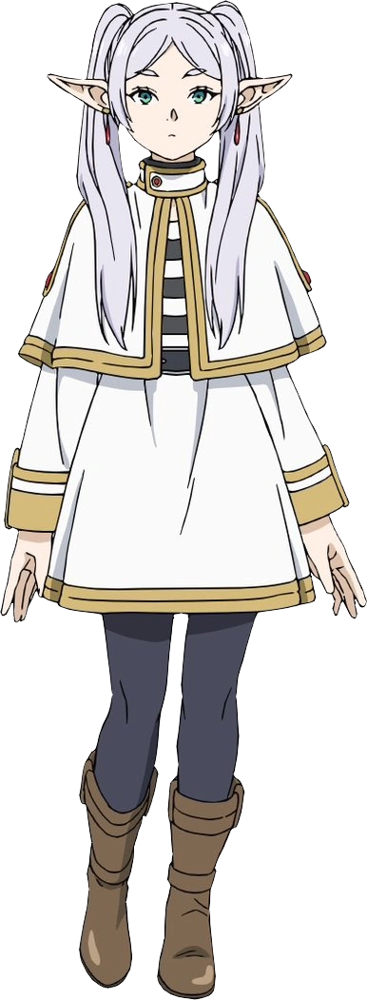

Frieren is the main protagonist of the anime series Frieren: Beyond Journey's End. She is a powerful elf mage who has lived for centuries and has accumulated vast knowledge of magic. She joined the Hero’s party to attempt to defeat the demon king. As an elf Frieren has a different view on time. This is an important factor in her personality.
As the main protagonist, Frieren shows up at the very beginning of the series.